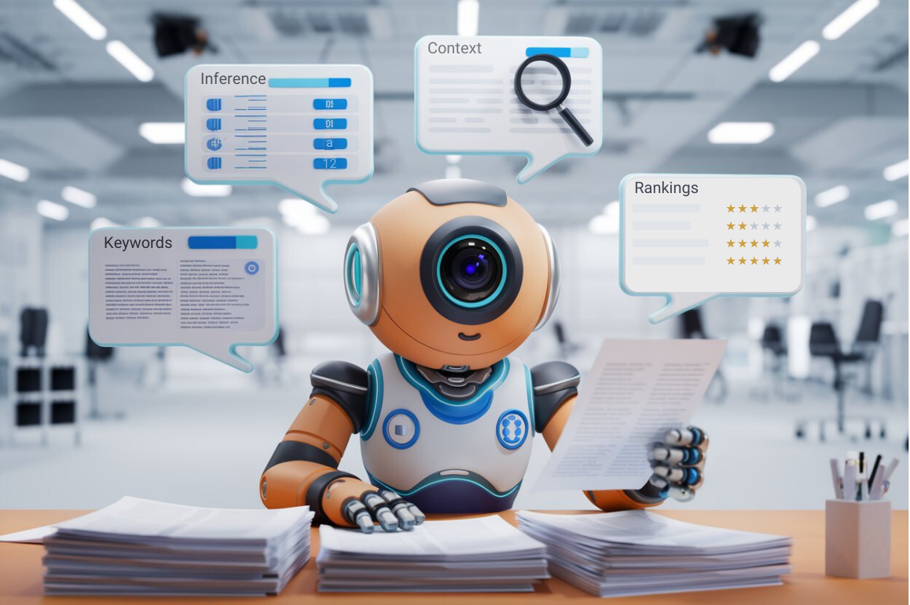
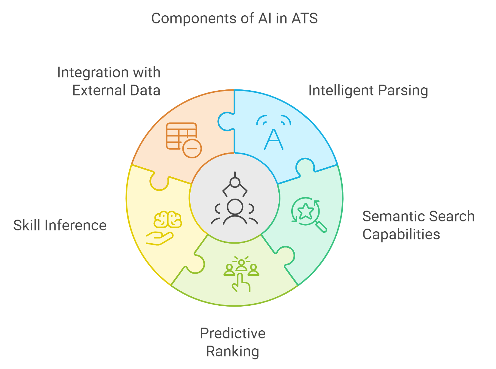
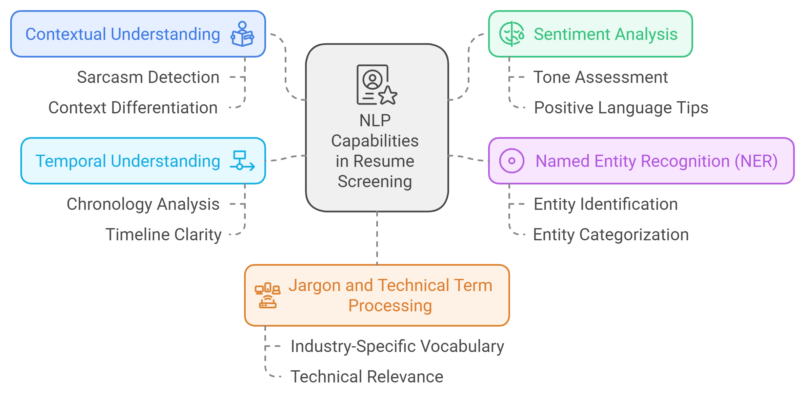
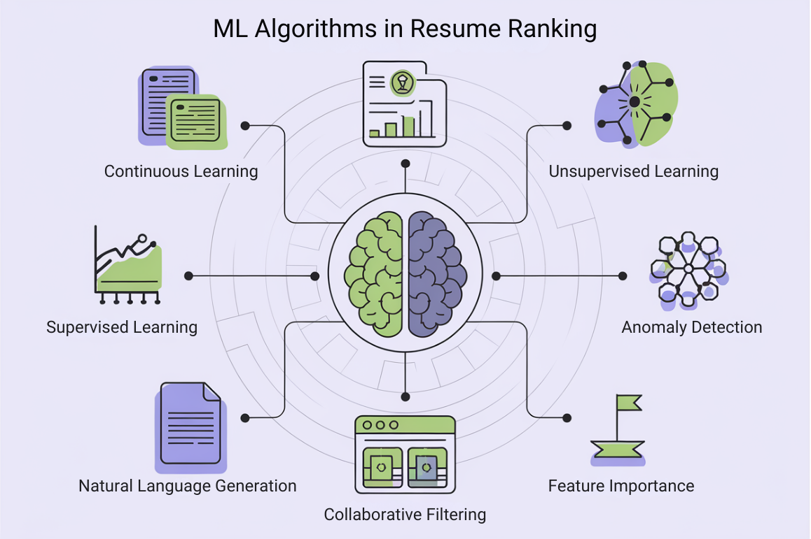

II. Understanding AI in Resume Screening: When Robots Become Your First Interviewers
Welcome back! Now that we've set the stage for our AI-powered job hunt adventure, it's time to dive deeper into the silicon brain of modern hiring processes. Buckle up - we're about to journey into the mind of the machines that might just decide the fate of your next job application. Don't worry, it's less "Terminator" and more "WALL-E" – these AIs are here to help!
A. How Applicant Tracking Systems (ATS) Use AI: Your Resume's First Date with a Robot
Welcome to the era of AI-powered hiring, where your first interviewer might just be an algorithm. These AI systems act like gatekeepers, scanning resumes for keywords and key qualifications before passing them on to human recruiters. With competition at an all-time high, it's essential to ensure your resume makes the cut by aligning it with what these systems prioritize.

- Intelligent Parsing: The Resume Whisperer
Modern ATS are like that friend who always knows what you mean, even when you're not making sense. They use Natural Language Processing (NLP) to understand your resume, regardless of its format. It's a universal translator for your professional life.
Example: When an ATS sees "Python" on your resume, it knows you're talking about coding, not snakes. Unless, of course, you're applying to be a zookeeper who codes. In that case, kudos on the niche career choice!
- Semantic Search Capabilities: The Synonym Sorcerer
Gone are the days when you had to stuff your resume with exact keywords. Modern ATS understand synonyms and related terms. They've basically swallowed a thesaurus.
Example: If a job asks for "machine learning" experience, the ATS might also give you brownie points for mentioning "neural networks" or "deep learning", i.e. receiving extra credit for knowing all the cool kids' nicknames.
- Predictive Ranking: The Fortune Teller of Hiring
Some ATS are trying to predict your job performance based on your resume. It's like Minority Report, but for your career prospects. They look at factors like career progression, project descriptions, and even the language you use.
Pro Tip: While you can't control the AI's crystal ball, you can influence its predictions. Focus on showcasing clear career growth and impactful projects in your resume.
- Skill Inference: The Sherlock Holmes of Resumes
Advanced ATS can deduce skills you haven't even mentioned, based on your experience.
Example: If you've worked extensively with AWS, the system might infer you know about cloud computing, even if you forgot to brag about it. It's like getting credit for being modest!
- Integration with External Data: The Social Media Stalker (in a Professional Way)
Some ATS are like that date who Googled you before meeting – they cross-reference your resume with publicly available information. It's not creepy; it's thorough!
Pro Tip: Keep your LinkedIn profile up to date and consistent with your resume. Think of it as maintaining your professional doppelganger.

B. Natural Language Processing (NLP) in Resume Analysis: Teaching Machines to Read Between the Lines
Natural Language Processing is the heart and soul of how AI understands your resume. It's like teaching a robot to read, but instead of "See Spot Run," it's "See Jane Code." Let's break down how NLP is applied in resume analysis:
[Image: An infographic showing the process of NLP analyzing a resume, with arrows pointing to different elements like context, sentiment, entities, etc. This can be created using a tool like Canva or Adobe Illustrator.]
- Contextual Understanding: The "It's Not What You Say, It's How You Say It" Bot
NLP algorithms can distinguish between different contexts of the same word, like having a robot that (almost) understands sarcasm.
Example: The NLP knows that "Python" in your skills section is different from "Python" in your hobbies section about exotic pet ownership. Context is king, even in the digital realm!
- Sentiment Analysis: The Mood Ring for Your Resume
Yes, AI can now judge the tone of your resume. It's like having a therapist read your job history, minus the couch and hourly rate.
Pro Tip: Use positive, action-oriented language in your resume, like giving your resume a pep talk. Instead of "Managed a team," try "Successfully led a high-performing team to achieve project goals."
- Named Entity Recognition (NER): The Name-Dropper's Best Friend
NLP as a robot paparazzi can identify and categorize named entities in your resume.
Example: When you mention "Google" or "MIT," the NLP perks up like a meerkat spotting a celebrity. Make sure your named entities are impressive!
- Temporal Understanding: The Time Lord of Your Career
NLP can interpret and analyze the chronology of your experiences.
Pro Tip: Be clear about your timeline. If you have gaps, be prepared to explain them. Remember, in the world of AI, every career move is part of your origin story!
- Jargon and Technical Term Processing: The Geek Speak Translator
For STEM resumes, NLP is often trained on industry-specific vocabularies (technobabble).
Example: When you drop terms like "quantum computing" or "blockchain," the NLP doesn't just see buzzwords; it understands their relevance and complexity.

C. Machine Learning Algorithms in Candidate Ranking: How AI Plays Career Cupid
Machine Learning algorithms are the matchmakers of the hiring world, trying to set you up with your dream job. Let's peek behind the curtain at how these digital yentas operate:

- Supervised Learning for Resume Ranking: The "Learn from the Best" Bot
ML models are trained on datasets of previously successful hires. So yes, the AI memorizes the "Most Likely to Succeed" club page of the company yearbook.
Pro Tip: Research successful professionals in your target role. If they all have a certain certification or experience, it might be worth adding to your professional development list.
- Unsupervised Learning for Skill Clustering: The "Birds of a Feather" Algorithm
ML can group similar skills and experiences together. The robot essentially plays "All of These Are Alike" with your skill set.
Example: Experience in "data visualization" might be clustered with "business intelligence" skills. Suddenly, your D3.js project is rubbing elbows with your Tableau experience.
- Natural Language Generation (NLG) for Resume Summaries: The Robot Cliffs Notes
Some advanced systems use NLG to create brief summaries of candidate profiles.
Pro Tip: Make sure your key qualifications are front and center in your resume. You want the robot to grab the best notes about you.
- Anomaly Detection: The "One of These Skills is Not Like the Others" Detector
ML algorithms can flag unusual patterns in resumes. This could work in your favor (unique skills) or against you (unexplained career shifts).
Pro Tip: If you have an unconventional career path, own it! Prepare a compelling narrative that connects the dots. Turn that anomaly into your superhero origin story.
- Collaborative Filtering: The "If You Liked This Candidate, You Might Also Like..." Algorithm
Some ATS use collaborative filtering to suggest candidates, similar to how Netflix recommends shows.
Example: If a hiring manager likes your profile, the system might recommend similar candidates. So if you don't get the job, at least you know you've helped a fellow tech enthusiast.
- Feature Importance in ML Models: The "What Really Matters" Meter
Different aspects of your resume are weighted differently by ML models. For STEM roles, as expected, technical skills and project outcomes often carry more weight.
Pro Tip: Focus on quantifiable achievements and cutting-edge technical skills. Make those robots' circuits sizzle with your impressive metrics.
- Continuous Learning and Adaptation: The "Always Be Learning" Bot
Modern ML models in ATS continuously learn and adapt based on hiring outcomes. In other words, the AI is constantly updating its playbook on what makes a great hire.
Pro Tip: Stay informed about the latest trends in your field. The skills that are hot today might be lukewarm tomorrow. Keep your resume as up-to-date as your Netflix queue.
And there you have it, folks! You've just dived deep into the silicon brain of modern hiring processes. Armed with this knowledge, you're ready to craft a resume that will make the AIs swoon and the humans intrigued.
Remember, while optimizing for AI is important, your resume will ultimately be read by humans (we hope). The goal is to create a resume that performs well with AI systems while still being compelling and readable to human recruiters and hiring managers. Think of it as writing a best-selling novel that's also a hit with the critics – you want to please both the algorithms and the literati.
In our next chapter, we'll explore the essential AI tools that can help you tailor your resume like a tech-savvy tailor.
"In the age of AI recruitment, your resume isn't just a document – it's a dialogue with both machines and humans. Speak both languages fluently, and you'll land that dream job faster than you can say 'artificial intelligence' in assembly language" - Probably some career guru (after just the right amount coffee)
Key Takeaways: Understanding AI in Resume Screening
- AI-powered Applicant Tracking Systems (ATS) are the first hurdle to clear in the hiring process. Ensure your resume is keyword-optimized.
- Natural Language Processing (NLP) algorithms in ATS systems evaluate context and skills, so precise language and terminology matter.
- Use AI tools to tailor your resume specifically for the role you're applying to, ensuring you meet both the technical and soft skill requirements.